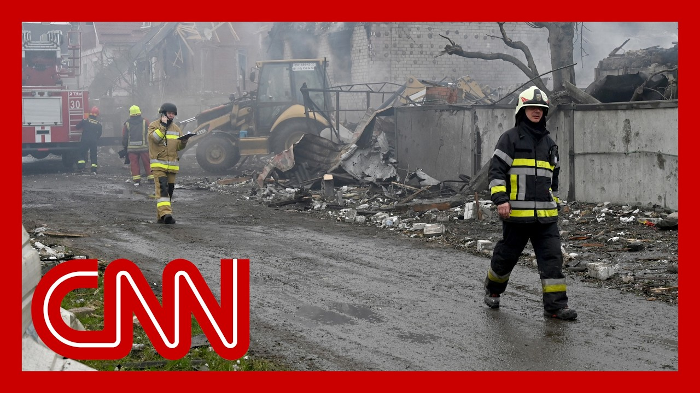

【泽连斯基：美国对俄方大规模袭击保持“沉默”是在鼓励普京】
Summary: Ukrainian President Zelensky accuses the U.S. of encouraging Putin by remaining silent after Russian attacks, while CNN reports both a major prisoner exchange and devastating aerial assaults over the weekend.
摘要： 乌克兰总统泽连斯基指责美国在俄方袭击后保持沉默是在鼓励普京，同时CNN报道了周末期间大规模战俘交换和毁灭性空袭。

⏱️ Estimated Reading Time: 10 min
All right.
好的。
New this afternoon, Ukrainian President Volodymyr Zelensky is accusing the U.S. of encouraging Russia's Vladimir Putin by remaining silent after a weekend of Russian attacks on the capital, Kyiv, and other parts of Ukraine.
今天下午最新消息，乌克兰总统弗拉基米尔·泽连斯基指责美国在俄罗斯对首都基辅及乌克兰其他地区发动周末袭击后保持沉默，是在鼓励俄罗斯的弗拉基米尔·普京。
CNN's Paula Hancocks has the latest.
CNN的葆拉·汉考克斯带来最新报道。
We have seen a weekend of superlatives at the same time as seeing the largest aerial assaults from the Russian military on Ukrainian cities.
我们目睹了一个充满极端事件的周末，同时见证了俄军对乌克兰城市发动的最大规模空袭。
We're also seeing the largest prisoner exchange between the two countries.
我们还看到了两国之间最大规模的战俘交换。
Now, starting with the positive, we did see over three days Friday, Saturday and Sunday, a total of 2000 prisoners being released, 1000 Russian, 1000 Ukrainian.
先从积极的一面说起，我们在周五、周六和周日三天内共看到2000名战俘获释，其中1000名俄罗斯人，1000名乌克兰人。
Now this did happen.
这确实发生了。
As I say, over three days we have been seeing some very emotional reunions, some very emotional images on the Ukrainian side as those coming off from busses draped in the Ukrainian flag are reunited with their loved ones.
正如我所说，三天来我们看到了一些非常感人的团聚场景，乌克兰方面出现了许多动人画面，那些从悬挂乌克兰国旗的巴士上下来的人与亲人重逢。
In some cases they have been held prisoner for a number of years now.
其中一些人已被关押多年。
We did hear from the Ukrainian leader, Volodymyr Zelensky, thanking everybody involved in this process.
我们确实听到乌克兰领导人弗拉基米尔·泽连斯基感谢所有参与这一进程的人。
Sometimes many of them.
有时是许多人。
The task is to bring home absolutely everyone who is currently held in Russia, and this is a joint task for our intelligence services, for our diplomats, for our entire state.
任务是把所有目前被关押在俄罗斯的人带回家，这是我国情报部门、外交官和整个国家的共同任务。
Clearly, it's not an easy task, but it must be accomplished.
显然，这不是一项容易的任务，但必须完成。
I'm grateful to everyone around the world who is helping us now.
我感谢世界各地正在帮助我们的人。
According to the Ukrainian Prisoner of War Center, this is the sixth prisoner exchange that we have seen this year alone, and it is the 65th overall.
根据乌克兰战俘中心的数据，这仅是今年我们看到的第六次战俘交换，总计第65次。
And yet at the same time is seeing something as positive as this.
然而与此同时，我们也看到了如此积极的事件。
We also saw a devastating weekend when it came to the aerial assaults on Ukraine.
就乌克兰遭受的空袭而言，我们也看到了一个毁灭性的周末。
We saw from the Ukrainian Air Force saying that Saturday into Sunday there were almost 70 missiles, almost 300 drones.
我们看到乌克兰空军表示，从周六到周日有近70枚导弹和近300架无人机。
Now, many of them, they claimed, were intercepted, but those that got through were deadly.
他们声称其中许多被拦截，但那些突破防线的极具杀伤力。
We know that children were among the dead and injured.
我们知道死者伤者中有儿童。
Now they say there were drones that were cruise missiles, ballistic missiles fired from both ships and planes.
他们说其中有无人机、巡航导弹，以及从舰船和飞机发射的弹道导弹。
leader, rescuers were working in well over 30 cities and villages across the country.
领导层表示，救援人员在全国30多个城市和村庄展开工作。
Now there were some 13 different districts that were impacted, but certainly what we saw in the capital, in Kiev in the early hours of Sunday morning was that the air raid sirens were blaring for hours.
约有13个不同地区受到影响，但周日凌晨在首都基辅，我们确实看到空袭警报持续鸣响数小时。
Residents were told to stay in shelters in the early hours of Sunday morning and over the weekend.
居民被告知在周日凌晨和整个周末待在避难所。
That one parliament member, speaking to CNN said it felt like Armageddon.
一位议员对CNN表示，感觉像是世界末日。
So a very devastating and deadly weekend in a number of Ukrainian cities.
对乌克兰多个城市来说，这是一个非常毁灭性和致命的周末。
Paula Hancocks, CNN, Abu Dhabi.
CNN记者葆拉·汉考克斯，阿布扎比报道。
Joining us right now is Bill Taylor.
现在加入我们的是比尔·泰勒。
He is former U.S. ambassador to Ukraine and a distinguished fellow at the Atlantic Council.
他是美国前驻乌克兰大使，大西洋理事会杰出研究员。
Good to see you, ambassador.
很高兴见到您，大使。
President Zelensky says a U.S. silence on the weekend attacks just encourages Vladimir Putin.
泽连斯基总统表示，美国对周末袭击保持沉默就是在鼓励弗拉基米尔·普京。
Do you agree with that?
您同意这种说法吗？
So, Fredricka, the world, the international community, the Americans and Europeans all have to condemn these kind of attacks.
弗雷德丽卡，世界、国际社会、美国和欧洲都必须谴责这类袭击。
it is it's a it's an indication, that the Russians think they can get away with this.
这表明俄罗斯人认为他们可以逍遥法外。
It's an indication that there's no intent on the part of the Russians to seek a peace deal.
这表明俄罗斯方面无意寻求和平协议。
there's no there's no willingness to negotiate.
他们没有谈判的意愿。
they continue, and that needs to be condemned.
他们继续行动，这必须受到谴责。
Absolutely.
确实如此。
So in your view, is it just lip service that, Vladimir Putin wants some sort of deal peace deal, ending war?
那么在您看来，弗拉基米尔·普京想要某种和平协议结束战争只是空谈吗？
Whichever way you want to put it.
无论您如何表述。
Is this just a charade?
这只是场闹剧吗？
It's a charade.
这是场闹剧。
You're exactly right.
您说得完全正确。
It is a charade.
这是场闹剧。
he is, trying to indicate the that he's willing to make some some compromises.
他试图表明愿意做出一些妥协。
No compromises.
没有妥协。
Every time he he's asked what he's after, it's essentially Ukrainian surrender.
每次被问及目标时，他本质上都是在要求乌克兰投降。
Ukrainians have been fighting for more than 3 to 3 and a quarter years.
乌克兰人已经战斗了三年多至三年零三个月。
They're not for surrender.
他们不会投降。
They will not surrender.
他们不会投降。
So Putin continues to push, the the his army.
因此普京继续推动他的军队。
his army, Fredricka, is not making progress.
弗雷德丽卡，他的军队没有取得进展。
He's not making progress on the ground.
他在战场上没有进展。
The only thing his army is that our armed forces can do is fire drones, as you just reporting, as I was just saying, firing drones and missiles, many of which they get from North Korea and Iran.
正如您刚才报道和我所说，他的军队唯一能做的就是发射无人机和导弹，其中许多来自朝鲜和伊朗。
That's all they can do.
这就是他们所能做的全部。
they have no intent of stopping this attack.
他们无意停止这种攻击。
So would you say that the US hope, you know, is really futile?
那么您会认为美国的希望真的徒劳吗？
I mean, that the U.S. is kind of wasting its time if there is going to be a bringing to the table, or does the U.S. need to consider something else if it wants to be a participant in helping to end this war?
我的意思是，如果要把问题摆到桌面上，美国是否在浪费时间，或者如果美国想参与帮助结束这场战争，是否需要考虑其他措施？
What would that be?
那会是什么？
That would be pressure on Putin to negotiate.
那就是向普京施压要求谈判。
that would be economic pressure, in the form of additional sanctions.
这将是经济压力，以额外制裁的形式。
And that would in the form of of additional weapons and military support for Ukraine.
这还将以向乌克兰提供更多武器和军事支持的形式。
You're indirectly stepping up on both counts.
你们正在间接加强这两方面。
that is they're putting on new sanctions.
即他们正在实施新制裁。
and they're providing as much of the weapons as they can.
并且他们正在尽可能多地提供武器。
Senator Graham, Senator Lindsey Graham in this country has some 83 co-sponsors.
格雷厄姆参议员，林赛·格雷厄姆参议员在本国获得了约83名共同提案人。
The 81 co-sponsors, in addition to the two sponsors on a bill that would put sanctions on Russia.
81名共同提案人，外加两名主要提案人支持一项对俄制裁法案。
This can be done.
这是可以做到的。
The American people support Ukraine and oppose Putin.
美国人民支持乌克兰反对普京。
the Senate is in strong position to put these sanctions on.
参议院处于强势地位来实施这些制裁。
That's what can be done.
这就是可以采取的措施。
No, it is not hopeless.
不，这并非毫无希望。
If the U.S. doesn't provide, more weapons, then, you know, the onus is is largely going to be on Europe.
如果美国不提供更多武器，那么责任主要将落在欧洲身上。
Does it have the ability, to do more, to go it alone, so to speak, to help Ukraine?
它有能力做得更多，独自行动，帮助乌克兰吗？
Well, it turns out, that some 40% of the weapons being used on the battlefield right now, coming from Ukrainians over Ukrainian factories.
事实证明，目前战场上使用的武器约40%来自乌克兰工厂。
40%, are Ukrainian made weapons.
40%是乌克兰制造的武器。
30% coming from, Europeans are coming from the United States.
30%来自欧洲，30%来自美国。
so that's of the Ukrainians are stepping up their their ability to provide these, as are the Europeans.
因此乌克兰人正在提升提供这些武器的能力，欧洲人也是如此。
But you're right, Europeans do not have the military industrial complex, the defense industrial base, in order to provide the kinds of equipment that the Americans have provided.
但您说得对，欧洲没有军工复合体，没有国防工业基础来提供美国提供的那种装备。
So the Europeans are willing to buy from the United States, from U.S. arms manufacturers.
因此欧洲人愿意从美国、从美国军火制造商那里购买。
weapons for Ukraine.
为乌克兰购买武器。
So that can happen.
所以这是可行的。
We just have to give them the okay to do that.
我们只需批准他们这样做。
Ambassador Bill Taylor, always a great pleasure having you.
比尔·泰勒大使，总是很高兴有您参与。
Thank you so much.
非常感谢。
Thank you Fredricka.
谢谢你弗雷德丽卡。